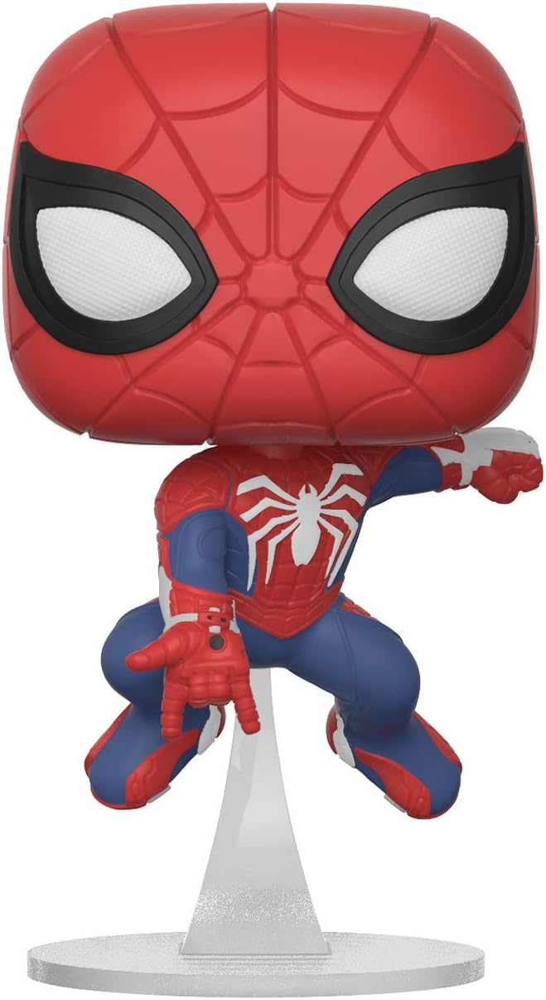

Design
Spiderman
Se trata de un estudiante común y corriente que,luego de ser mordido por una araña radioactiva,adquiere habilidades especiales como fuerza, velocidad, agilidad, reflejos, equilibrio,coordinación y resistencia sobrehumanos.
Sebastian A.Delgado Castañeda